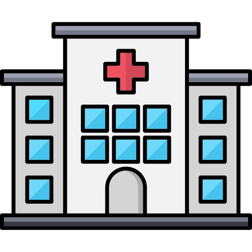

Medicina General
Control preventivo, evaluación integral y seguimiento de salud para adultos y jóvenes.

Cuidando de su salud desde 1985
Somos una institución médica comprometida con la prevención, el diagnóstico oportuno y la atención humana de nuestros pacientes y sus familias.

Contamos con profesionales calificados en las principales áreas de salud:
Control preventivo, evaluación integral y seguimiento de salud para adultos y jóvenes.
Atención especializada, control de crecimiento y vacunación para bebés, niños y adolescentes.
Prevención, diagnóstico y tratamiento de afecciones cardiovasculares.
Manejo de lesiones óseas, articulares, musculares y rehabilitación física.
| Sede | Atención General | Emergencias |
|---|---|---|
| Sede Valle de los Chillos | Lunes a Sábado: 07:00 - 20:00 | 24 horas |
| Sede Quito Tennis | Lunes a Viernes: 07:30 - 19:00 | 07:00 - 22:00 |
| Sede Centro Histórico | Lunes a Sábado: 08:00 - 18:00 | 24 horas |